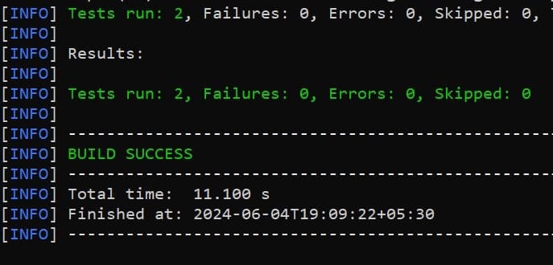

Informatique et Réseaux
Introduksjon
Etter to år med MIC begynner man på IR, som oftest er i GEI sammen med AE (en spesialisering innen IMACS). Programmet er preget av mye informatikk, nettverk, og litt elektronikk (mer spesifikt mikrokontrollere). Det er enda mer prosjektarbeid, og færre forelesninger og eksamener.
Typiske prosjekter i IR
- Egen kommunikasjonsprotokoll (Stop & Wait TCP)
- Algoritmer til en maps-app (finne korteste vei på et kart, implementert i Java)
- Laserspill (bruk av fouriertransformasjon og programmering i C og ASM)
- Distribuert chat-system i Java
- Selvstyrende seilbåt ved bruk av en mikrokontroller (AE har samme prosjekt!)
- Checkers-løser ved bruk av AI-metoder (implementert i Rust)
- Egen C-compiler og VHDL mikroprosessor
SI og SC
Før man begynner i 4. klasse har man valget mellom SI (Systèmes Informatiques) og SC (Systèmes communicants). SI har mer fokus på koding og nettverk, mens SC har mer fag innen telekommunikasjon.
SI
Systèmes Informatiques
Mer koding og nettverk. Det skal sies at 90% velger SI. Se fagene for året (Excel).
SC
Systèmes communicants
Mer fag innen telekommunikasjon. Se fagene for året (Excel).
Dette valget har ingenting å si for 5. klasse.
5. klasse
I 5. klasse kan man velge en rekke spesialiseringer, noen sammen med AE:
SDBD
Systèmes Distribués et Big Data
Distribuerte systemer og databehandling.
SIEC
Systèmes Informatiques Embarqués Critiques
Embedded systems.
Det finnes også fordypninger som enda flere institutter kan ta, kalt PTP (Parcours Transverses Pluridisciplinaires):
Informasjon er vanskeligere å finne, men det kan være nyttig å lete på gei.insa-toulouse.fr og Moodle under GEI-mappen.